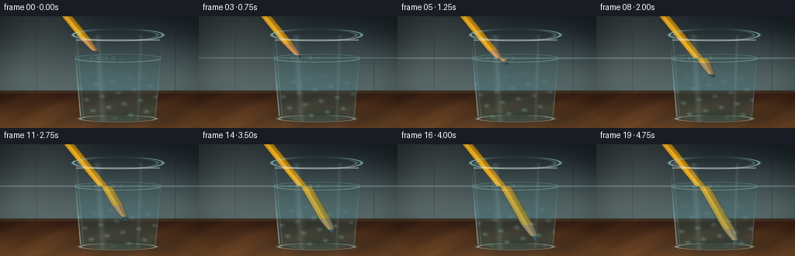
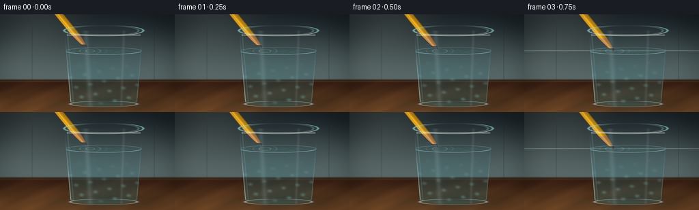
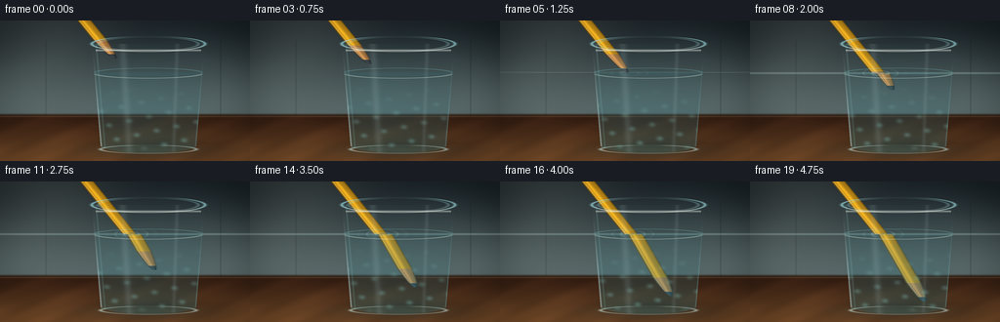
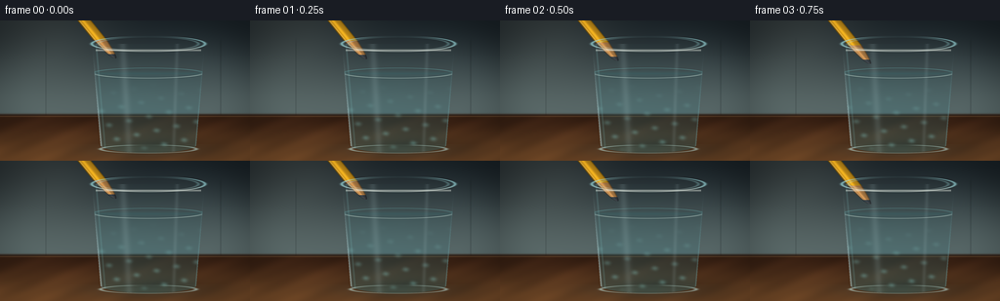

CODING AGENTS AS PIXEL WORLD MODELS
traex/DeepSeek-V4.1-Flash · phygen_073
点击播放 · 原生 RGB 像素
逐轮保存的候选
回放视频、检查图与代码变化。
每份候选均可单独播放。实际图片检查记录在下方工具轨迹中。
候选 01播放与检查图
点击播放 · 原生 RGB 像素


展开代码变化
--- 上一保存版本
+++ 本次保存版本
@@ -0,0 +1,325 @@
+from pathlib import Path
+
+import numpy as np
+from PIL import Image, ImageFilter
+
+import artifact_io
+
+
+WIDTH = 256
+HEIGHT = 144
+FRAMES = 20
+SUPERSAMPLE = 4
+
+
+def smoothstep(edge0, edge1, value):
+ value = np.clip((value - edge0) / (edge1 - edge0), 0.0, 1.0)
+ return value * value * (3.0 - 2.0 * value)
+
+
+def mix(color_a, color_b, amount):
+ color_a = np.asarray(color_a, dtype=np.float32)
+ color_b = np.asarray(color_b, dtype=np.float32)
+ return color_a * (1.0 - amount[..., None]) + color_b * amount[..., None]
+
+
+def blend(rgb, color, alpha):
+ alpha = np.asarray(alpha, dtype=np.float32)
+ if alpha.ndim == 2:
+ alpha = alpha[..., None]
+ color = np.asarray(color, dtype=np.float32)
+ return rgb * (1.0 - alpha) + color * alpha
+
+
+def gaussian_band(distance, width):
+ return np.exp(-0.5 * (distance / width) ** 2)
+
+
+def make_background(xx, yy):
+ vertical = smoothstep(0.0, 100.0, yy)
+ rgb = mix((0.075, 0.105, 0.125), (0.31, 0.37, 0.37), vertical)
+
+ # Soft daylight entering from the upper left.
+ light = np.exp(-(((xx - 42.0) / 78.0) ** 2 + ((yy - 6.0) / 74.0) ** 2))
+ rgb = blend(rgb, (0.63, 0.67, 0.61), 0.20 * light)
+ upper_glow = np.exp(-(((xx - 205.0) / 62.0) ** 2 + ((yy - 45.0) / 55.0) ** 2))
+ rgb = blend(rgb, (0.46, 0.55, 0.54), 0.10 * upper_glow)
+
+ # A restrained panel seam keeps the background from reading as a flat gradient.
+ seam = gaussian_band(np.abs(xx - 47.0), 0.35)
+ seam += gaussian_band(np.abs(xx - 226.0), 0.45)
+ rgb = blend(rgb, (0.045, 0.065, 0.073), 0.22 * seam * smoothstep(16.0, 25.0, yy))
+
+ # Walnut tabletop with perspective grain.
+ table_y = smoothstep(94.0, 98.5, yy)
+ table = mix((0.23, 0.125, 0.070), (0.46, 0.285, 0.145), smoothstep(96.0, 143.0, yy))
+ grain = (
+ np.sin(xx * 0.095 + yy * 0.21 + 1.4 * np.sin(yy * 0.07))
+ + 0.55 * np.sin(xx * 0.037 - yy * 0.12)
+ + 0.35 * np.sin((xx + yy * 2.3) * 0.19)
+ )
+ table *= (0.94 + 0.055 * grain)[..., None]
+ table *= (0.84 + 0.25 * smoothstep(96.0, 142.0, yy))[..., None]
+ rgb = rgb * (1.0 - table_y[..., None]) + table * table_y[..., None]
+
+ # Table edge and a narrow reflection beneath the glass.
+ edge = gaussian_band(np.abs(yy - 97.2), 0.55)
+ rgb = blend(rgb, (0.12, 0.075, 0.050), 0.52 * edge)
+ edge_glint = gaussian_band(np.abs(yy - 98.4), 0.45)
+ rgb = blend(rgb, (0.78, 0.61, 0.40), 0.18 * edge_glint)
+
+ # Contact shadow, broad enough to seat the glass on the table.
+ shadow = np.exp(-((((xx - 151.0) / 66.0) ** 2 + ((yy - 132.0) / 11.0) ** 2)))
+ rgb = blend(rgb, (0.055, 0.037, 0.028), 0.55 * shadow)
+ soft_shadow = np.exp(-((((xx - 156.0) / 83.0) ** 2 + ((yy - 133.0) / 19.0) ** 2)))
+ rgb = blend(rgb, (0.13, 0.09, 0.065), 0.25 * soft_shadow)
+ return rgb
+
+
+def glass_geometry(xx, yy):
+ cx = 152.0
+ top = 24.0
+ shoulder = 128.0
+ bottom = 136.0
+ rx_top = 58.0
+ rx_bottom = 49.0
+ half_width = rx_top + (rx_bottom - rx_top) * np.clip((yy - top) / (shoulder - top), 0.0, 1.0)
+ body = (yy >= top) & (yy <= shoulder) & (np.abs(xx - cx) <= half_width)
+ cap = (((xx - cx) / rx_bottom) ** 2 + ((yy - shoulder) / (bottom - shoulder)) ** 2 <= 1.0) & (yy >= shoulder)
+ mask = (body | cap).astype(np.float32)
+ return mask, half_width, cx, top, shoulder, bottom, rx_top, rx_bottom
+
+
+def pencil_layer(xx, yy, frame_index):
+ t = frame_index / (FRAMES - 1)
+ motion = smoothstep(0.0, 1.0, t)
+ waterline = 54.0
+ shift = 4.2 * motion
+ water_cross = 130.0 + shift
+ tip_y = 49.0 + 79.0 * motion
+
+ upper_center = water_cross + (yy - waterline) * 0.81
+ lower_center = water_cross + 4.6 + (yy - waterline) * 0.575
+ underwater = yy >= waterline
+ center = np.where(underwater, lower_center, upper_center)
+
+ distance_to_tip = tip_y - yy
+ taper = np.clip(distance_to_tip / 19.0, 0.0, 1.0)
+ taper = 0.10 + 0.90 * np.sqrt(taper)
+ half_width = np.where(underwater, 7.65, 7.15) * taper
+
+ valid = (distance_to_tip >= 0.0) & (yy >= -24.0)
+ # The upper section stops at the surface once the tip is submerged.
+ valid &= ~(underwater & (tip_y <= waterline))
+
+ signed = xx - center
+ edge = np.abs(signed) - half_width
+ alpha = smoothstep(0.7, -0.65, edge) * valid
+
+ facet = np.clip(signed / np.maximum(half_width, 0.1), -1.0, 1.0)
+ shade = 0.72 + 0.32 * np.exp(-((facet + 0.22) / 0.31) ** 2)
+ shade -= 0.18 * np.abs(facet) ** 3
+ shade += 0.10 * np.exp(-((facet + 0.62) / 0.12) ** 2)
+
+ body_color = np.stack(
+ (
+ 0.96 * shade,
+ 0.68 * shade,
+ 0.105 * shade,
+ ),
+ axis=-1,
+ )
+ wood_color = np.stack(
+ (
+ 0.83 * shade,
+ 0.57 * shade,
+ 0.30 * shade,
+ ),
+ axis=-1,
+ )
+ graphite_color = np.stack(
+ (
+ 0.18 * shade + 0.04,
+ 0.19 * shade + 0.045,
+ 0.20 * shade + 0.055,
+ ),
+ axis=-1,
+ )
+
+ wood = distance_to_tip < 19.0
+ graphite = distance_to_tip < 4.4
+ color = np.where(wood[..., None], wood_color, body_color)
+ color = np.where(graphite[..., None], graphite_color, color)
+
+ # Crisp painted edge and a warm reflected rim.
+ outer = smoothstep(1.8, 0.2, np.abs(edge)) * valid
+ color = color * (1.0 - 0.30 * outer[..., None])
+ color += 0.16 * np.exp(-((facet + 0.72) / 0.09) ** 2)[..., None]
+ return alpha, np.clip(color, 0.0, 1.0), valid, underwater, center
+
+
+def add_pencil(rgb, xx, yy, frame_index):
+ alpha, color, valid, underwater, center = pencil_layer(xx, yy, frame_index)
+
+ # A faint displaced underwater image reads as the second edge of a refracted object.
+ ghost_alpha = alpha * underwater * 0.11
+ ghost_shift = np.roll(alpha, int(round(1.7 * SUPERSAMPLE)), axis=1)
+ ghost_shift *= underwater
+ ghost_color = np.asarray((0.26, 0.56, 0.59), dtype=np.float32)
+ rgb = blend(rgb, ghost_color, ghost_alpha)
+ rgb = blend(rgb, (0.11, 0.20, 0.21), ghost_shift * underwater * 0.08)
+
+ rgb = rgb * (1.0 - alpha[..., None]) + color * alpha[..., None]
+
+ # Tint only the submerged part toward the water color while retaining its form.
+ submerged = alpha * underwater * smoothstep(54.0, 69.0, yy)
+ rgb = blend(rgb, (0.28, 0.55, 0.55), submerged * 0.13)
+
+ # Keep the exact optical break from becoming a visually disconnected join.
+ join = valid * gaussian_band(np.abs(yy - 54.0), 0.65) * smoothstep(0.55, 1.8, np.abs(xx - center))
+ rgb = blend(rgb, (0.76, 0.91, 0.88), join * 0.30)
+ return rgb
+
+
+def add_water_and_glass(rgb, xx, yy, frame_index):
+ mask, half_width, cx, top, shoulder, bottom, rx_top, rx_bottom = glass_geometry(xx, yy)
+ inside = mask > 0.5
+ waterline = 54.0
+ water = inside & (yy >= waterline)
+
+ # Water body: subtle cyan absorption that increases with depth.
+ depth = smoothstep(waterline, bottom, yy)
+ water_alpha = water * (0.075 + 0.16 * depth)
+ rgb = blend(rgb, (0.13, 0.47, 0.52), water_alpha)
+
+ # Cool back-wall light and a darker meniscus band.
+ back_light = np.exp(-(((xx - 135.0) / 48.0) ** 2 + ((yy - 75.0) / 47.0) ** 2))
+ rgb = blend(rgb, (0.34, 0.69, 0.70), inside * back_light * 0.055)
+ meniscus = gaussian_band(np.abs(yy - waterline), 1.25) * inside
+ rgb = blend(rgb, (0.16, 0.40, 0.42), meniscus * 0.18)
+
+ # Moving caustics near the lower half of the glass.
+ phase = frame_index / FRAMES * 2.0 * np.pi
+ c1 = np.sin(xx * 0.18 + yy * 0.12 + phase)
+ c2 = np.sin(xx * 0.095 - yy * 0.27 - phase * 0.8 + 1.1)
+ caustic = np.clip(c1 * c2, 0.0, 1.0) ** 4
+ caustic *= water * smoothstep(58.0, 126.0, yy) * (1.0 - smoothstep(126.0, 136.0, yy))
+ rgb = blend(rgb, (0.58, 0.91, 0.89), caustic * 0.24)
+
+ # Three expanding elliptical ripples around the entry point.
+ t = frame_index / (FRAMES - 1)
+ ripple_cx = 132.1 + 4.2 * smoothstep(0.0, 1.0, t)
+ ripple = np.zeros_like(xx, dtype=np.float32)
+ for index in range(3):
+ age = (t * 1.55 + index / 3.0) % 1.0
+ radius = 6.5 + 27.0 * age
+ dx = xx - ripple_cx
+ dy = (yy - waterline) / 0.30
+ distance = np.sqrt(dx * dx + dy * dy)
+ ring = gaussian_band(distance - radius, 0.42)
+ ring += 0.38 * gaussian_band(distance - radius + 1.3, 0.34)
+ ripple += ring * ((1.0 - age) ** 1.8) * (0.55 + 0.45 * np.sin(age * np.pi))
+ ripple *= inside * np.exp(-((yy - waterline) / 5.0) ** 2)
+ rgb = blend(rgb, (0.72, 0.95, 0.93), np.clip(ripple, 0.0, 1.0) * 0.43)
+
+ # Water-surface ellipse: back edge cool, front edge brighter.
+ surface = (
+ ((xx - cx) / (half_width + 0.5)) ** 2
+ + ((yy - waterline) / 5.2) ** 2
+ )
+ surface_line = gaussian_band(surface - 1.0, 0.055) * inside
+ front_surface = surface_line * smoothstep(waterline - 1.0, waterline + 4.2, yy)
+ back_surface = surface_line * (1.0 - smoothstep(waterline - 4.2, waterline + 1.0, yy))
+ rgb = blend(rgb, (0.43, 0.78, 0.78), back_surface * 0.44)
+ rgb = blend(rgb, (0.88, 0.98, 0.93), front_surface * 0.60)
+
+ # Glass side walls and inner reflections.
+ left_edge = cx - half_width
+ right_edge = cx + half_width
+ left_glint = gaussian_band(xx - left_edge, 0.95) * inside
+ right_glint = gaussian_band(xx - right_edge, 0.75) * inside
+ left_glint *= smoothstep(top, shoulder, yy)
+ right_glint *= smoothstep(top, shoulder, yy)
+ rgb = blend(rgb, (0.88, 0.98, 0.98), left_glint * 0.50)
+ rgb = blend(rgb, (0.57, 0.82, 0.83), right_glint * 0.30)
+
+ inner_left = gaussian_band(xx - (left_edge + 4.4), 0.55) * inside
+ rgb = blend(rgb, (0.50, 0.78, 0.78), inner_left * 0.18)
+
+ # Two broad, soft window reflections on the glass front.
+ stripe = gaussian_band(xx - (126.0 + 0.06 * (yy - 30.0)), 2.6)
+ stripe2 = gaussian_band(xx - (181.0 - 0.035 * (yy - 40.0)), 1.35)
+ reflection = (0.10 * stripe + 0.08 * stripe2) * inside
+ rgb = blend(rgb, (0.82, 0.94, 0.95), reflection)
+
+ # Thick top rim, drawn last so the pencil clearly passes through the opening.
+ rim_ellipse = ((xx - cx) / rx_top) ** 2 + ((yy - top) / 8.0) ** 2
+ rim_outer = gaussian_band(rim_ellipse - 1.0, 0.045)
+ rim_inner = gaussian_band(rim_ellipse - 0.78, 0.040)
+ rim = np.clip(rim_outer + 0.45 * rim_inner, 0.0, 1.0)
+ rim *= smoothstep(top - 8.5, top - 5.0, yy) * (1.0 - smoothstep(top + 7.2, top + 9.5, yy))
+ rim_color = mix((0.58, 0.83, 0.84), (0.93, 0.98, 0.94), smoothstep(top + 1.0, top + 7.0, yy))
+ rgb = blend(rgb, rim_color, rim * 0.70)
+
+ # Rim front lip has a strong narrow specular.
+ lip = gaussian_band(np.abs(yy - (top + 6.6)), 0.65)
+ lip *= (np.abs(xx - cx) < rx_top - 4.0) & (yy > top + 4.0)
+ rgb = blend(rgb, (0.96, 0.99, 0.94), lip * 0.42)
+
+ # Base ellipse and a pale optical pool on the table.
+ base_ellipse = ((xx - cx) / rx_bottom) ** 2 + ((yy - 132.0) / 4.2) ** 2
+ base_line = gaussian_band(base_ellipse - 1.0, 0.07)
+ base_line *= (yy > 128.0) & (yy < 137.0)
+ rgb = blend(rgb, (0.76, 0.91, 0.88), base_line * 0.55)
+ table_pool = np.exp(-(((xx - cx) / 51.0) ** 2 + ((yy - 133.5) / 7.0) ** 2))
+ table_pool *= (yy > 127.0)
+ rgb = blend(rgb, (0.69, 0.82, 0.70), table_pool * 0.10)
+ return rgb
+
+
+def finish_image(rgb, frame_index):
+ # Gentle vignette and a little warm/cool color grading.
+ yy, xx = np.mgrid[0 : HEIGHT * SUPERSAMPLE, 0 : WIDTH * SUPERSAMPLE]
+ x = (xx + 0.5) / SUPERSAMPLE
+ y = (yy + 0.5) / SUPERSAMPLE
+ radius = np.sqrt(((x - 128.0) / 151.0) ** 2 + ((y - 72.0) / 93.0) ** 2)
+ vignette = 1.0 - 0.24 * smoothstep(0.58, 1.12, radius)
+ rgb *= vignette[..., None]
+
+ highlight_rolloff = np.maximum(rgb - 0.86, 0.0)
+ rgb -= 0.22 * highlight_rolloff
+ rgb = np.clip(rgb, 0.0, 1.0)
+ rgb = np.power(rgb, 0.94)
+
+ image = Image.fromarray(np.round(rgb * 255.0).astype(np.uint8), "RGB")
+ image = image.resize((WIDTH, HEIGHT), Image.Resampling.LANCZOS)
+
+ # Very light output sharpening restores the glass edge after downsampling.
+ image = image.filter(
+ ImageFilter.UnsharpMask(radius=0.55, percent=38, threshold=2)
+ )
+ return np.asarray(image, dtype=np.uint8)
+
+
+def render_frame(frame_index):
+ height = HEIGHT * SUPERSAMPLE
+ width = WIDTH * SUPERSAMPLE
+ yy, xx = np.mgrid[0:height, 0:width]
+ xx = (xx.astype(np.float32) + 0.5) / SUPERSAMPLE
+ yy = (yy.astype(np.float32) + 0.5) / SUPERSAMPLE
+
+ rgb = make_background(xx, yy)
+ rgb = add_pencil(rgb, xx, yy, frame_index)
+ rgb = add_water_and_glass(rgb, xx, yy, frame_index)
+ return finish_image(rgb, frame_index)
+
+
+def main():
+ case_dir = Path(__file__).resolve().parent
+ frames = np.stack([render_frame(index) for index in range(FRAMES)])
+ artifact_io.save(frames, case_dir)
+ print(f"saved {frames.shape} video to {case_dir}")
+
+
+if __name__ == "__main__":
+ main()
候选 02播放与检查图
点击播放 · 原生 RGB 像素
展开代码变化
--- 上一保存版本
+++ 本次保存版本
@@ -96,7 +96,7 @@
waterline = 54.0
shift = 4.2 * motion
water_cross = 130.0 + shift
- tip_y = 49.0 + 79.0 * motion
+ tip_y = 8.0 + 120.0 * motion
upper_center = water_cross + (yy - waterline) * 0.81
lower_center = water_cross + 4.6 + (yy - waterline) * 0.575
@@ -208,10 +208,13 @@
# Three expanding elliptical ripples around the entry point.
t = frame_index / (FRAMES - 1)
+ motion = smoothstep(0.0, 1.0, t)
+ tip_y = 8.0 + 120.0 * motion
+ contact = smoothstep(49.0, 61.0, tip_y)
ripple_cx = 132.1 + 4.2 * smoothstep(0.0, 1.0, t)
ripple = np.zeros_like(xx, dtype=np.float32)
for index in range(3):
- age = (t * 1.55 + index / 3.0) % 1.0
+ age = (max(0.0, t - 0.38) * 1.9 + index / 3.0) % 1.0
radius = 6.5 + 27.0 * age
dx = xx - ripple_cx
dy = (yy - waterline) / 0.30
@@ -219,7 +222,7 @@
ring = gaussian_band(distance - radius, 0.42)
ring += 0.38 * gaussian_band(distance - radius + 1.3, 0.34)
ripple += ring * ((1.0 - age) ** 1.8) * (0.55 + 0.45 * np.sin(age * np.pi))
- ripple *= inside * np.exp(-((yy - waterline) / 5.0) ** 2)
+ ripple *= inside * np.exp(-((yy - waterline) / 5.0) ** 2) * contact
rgb = blend(rgb, (0.72, 0.95, 0.93), np.clip(ripple, 0.0, 1.0) * 0.43)
# Water-surface ellipse: back edge cool, front edge brighter.
@@ -291,7 +294,7 @@
rgb = np.clip(rgb, 0.0, 1.0)
rgb = np.power(rgb, 0.94)
- image = Image.fromarray(np.round(rgb * 255.0).astype(np.uint8), "RGB")
+ image = Image.fromarray(np.round(rgb * 255.0).astype(np.uint8))
image = image.resize((WIDTH, HEIGHT), Image.Resampling.LANCZOS)
# Very light output sharpening restores the glass edge after downsampling.
候选 03播放与检查图
候选 04播放与检查图
点击播放 · 原生 RGB 像素


展开代码变化
--- 上一保存版本
+++ 本次保存版本
@@ -96,7 +96,7 @@
waterline = 54.0
shift = 4.2 * motion
water_cross = 130.0 + shift
- tip_y = 8.0 + 120.0 * motion
+ tip_y = 39.0 + 84.0 * motion
upper_center = water_cross + (yy - waterline) * 0.81
lower_center = water_cross + 4.6 + (yy - waterline) * 0.575
@@ -209,12 +209,12 @@
# Three expanding elliptical ripples around the entry point.
t = frame_index / (FRAMES - 1)
motion = smoothstep(0.0, 1.0, t)
- tip_y = 8.0 + 120.0 * motion
+ tip_y = 39.0 + 84.0 * motion
contact = smoothstep(49.0, 61.0, tip_y)
ripple_cx = 132.1 + 4.2 * smoothstep(0.0, 1.0, t)
ripple = np.zeros_like(xx, dtype=np.float32)
for index in range(3):
- age = (max(0.0, t - 0.38) * 1.9 + index / 3.0) % 1.0
+ age = (max(0.0, t - 0.20) * 1.9 + index / 3.0) % 1.0
radius = 6.5 + 27.0 * age
dx = xx - ripple_cx
dy = (yy - waterline) / 0.30
可观测工具轨迹
实际执行的命令与返回图片。
命令 1exit 0
/bin/bash -c "pwd && rg --files -g 'prompt.txt' -g 'GENERATION_RULES.md' -g 'task_spec.json' -g '"'!node_modules'"' -g '"'!venv'"' | sort"
命令 2exit 0
/bin/bash -c "git status --short && find . -maxdepth 2 -type f | sort | sed -n '1,200p'"
命令 3exit 0
/bin/bash -c 'cat prompt.txt'
命令 4exit 0
/bin/bash -c 'cat GENERATION_RULES.md'
命令 5exit 0
/bin/bash -c 'cat task_spec.json'
命令 6exit 0
/bin/bash -c "sed -n '1,260p' artifact_io.py && printf '\\n--- PLAYER ---\\n' && sed -n '1,260p' player_template.html"
命令 7exit 0
/bin/bash -c "python - <<'PY'
import numpy, PIL
print('numpy', numpy.__version__)
print('Pillow', PIL.__version__)
PY"命令 8exit 0
/bin/bash -c 'time python generate.py'
命令 9exit 0
/bin/bash -c 'command -v chafa || command -v viu || command -v jp2 || true'
命令 10exit 127
/bin/bash -c 'ls -lh inspection.png transition_check.png pixels.npz index.html frames/*.png | tail -25 && file inspection.png'
命令 11exit 0
/bin/bash -c "python - <<'PY'
import numpy as np
from PIL import Image
for name in ['frames/00.png','frames/06.png','frames/12.png','frames/19.png']:
a=np.asarray(Image.open(name)).astype(float)
print(name, 'mean', a.mean((0,1)).round(1), 'std', a.std((0,1)).round(1), 'range', a.min(), a.max())
PY"命令 12exit 0
/bin/bash -c "python - <<'PY'
from PIL import Image
import numpy as np
chars=' .,:;irsXA253hMHGS#9B&@'
for fn in ['frames/00.png','frames/10.png','frames/19.png']:
a=np.asarray(Image.open(fn).convert('L').resize((96,54)))
# gamma/contrast
a=np.clip((a.astype(float)-8)*1.35,0,255)
idx=(a/256*len(chars)).astype(int).clip(0,len(chars)-1)
print('\\n###',fn)
for row in idx:
print(''.join(chars[i] for i in row))
PY"命令 13exit 0
/bin/bash -c "python - <<'PY'
from PIL import Image
import numpy as np
chars=' .,:;irsXA253hMHGS#9B&@'
for fn,box in [('frames/00.png',(0,0,256,144)),('frames/00.png',(90,15,220,140)),('frames/19.png',(90,15,220,140))]:
im=Image.open(fn)
if box"'!=(0,0,256,144): im=im.crop(box).resize((130,125))
else: im=im.resize((128,72))
a=np.asarray(im.convert('"'L')).astype(float)
a=np.clip((a-8)*1.3,0,255)
idx=(a/256*len(chars)).astype(int).clip(0,len(chars)-1)
print('\\n###',fn,box)
for row in idx: print(''.join(chars[i] for i in row))
PY"命令 14exit 0
/bin/bash -c "python - <<'PY'
from PIL import Image
import numpy as np
im=np.asarray(Image.open('frames/12.png')).astype(float)
# crop scene, classify key colors into symbols
for y in range(0,144,2):
row=''
for x in range(80,224,2):
r,g,b=im[y:y+2,x:x+2].mean((0,1))
if r>130 and r>g*1.18 and g>b*1.8: c='Y'
elif r>100 and g>85 and b>45 and r>b*1.35: c='y'
elif g>r*1.15 and g>b*.95 and b>45: c='C'
elif max(r,g,b)>155: c='*'
elif max(r,g,b)>100: c='o'
elif max(r,g,b)>60: c='.'
else: c=' '
row+=c
print(row)
PY"命令 15exit 0
/bin/bash -c 'time python generate.py'
命令 16exit 0
/bin/bash -c "python - <<'PY'
from PIL import Image
import numpy as np
for fn in ['frames/00.png','frames/04.png','frames/08.png','frames/10.png','frames/14.png','frames/19.png']:
im=np.asarray(Image.open(fn)).astype(float)
# classify yellow/orange pencil pixels and cyan glass pixels
r,g,b=im[...,0],im[...,1],im[...,2]
pencil=(r>115)&(r>g*1.15)&(g>b*1.55)
cyan=(g>r*1.15)&(g>b*.92)&(g>55)
ys,xs=np.where(pencil)
print(fn, 'pencil', len(xs), 'bbox', (xs.min(),ys.min(),xs.max(),ys.max()) if len(xs) else None, 'cyan', cyan.sum())
PY"命令 17exit 0
/bin/bash -c "python generate.py && python - <<'PY'
import json, zipfile
from pathlib import Path
import numpy as np
from PIL import Image
case=Path('.')
spec=json.loads(Path('task_spec.json').read_text())
frames=np.stack([np.asarray(Image.open(case/'frames'/f'{i:02d}.png')) for i in range(spec['frames'])])
assert frames.shape == (20,144,256,3) and frames.dtype == np.uint8
assert (case/'generate.py').is_file() and (case/'pixels.npz').is_file() and (case/'index.html').is_file()
with np.load(case/'pixels.npz') as z:
packed=z['pixels']
assert packed.shape == (144,256,20)
diffs=np.abs(frames[1:].astype(np.int16)-frames[:-1].astype(np.int16)).mean((1,2,3))
print('frame_diffs', np.round(diffs,2).tolist())
print('artifacts_ok', frames.shape, packed.shape, (case/'index.html').stat().st_size)
PY"保存候选 4 份；完成命令 17 次；可验证图片返回 0 张。原始 API 响应与完整日志保留在本地。